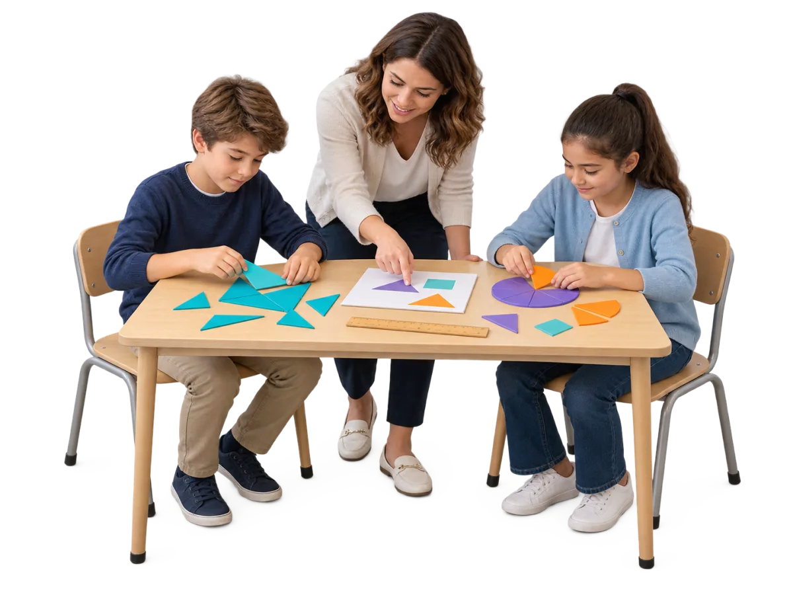
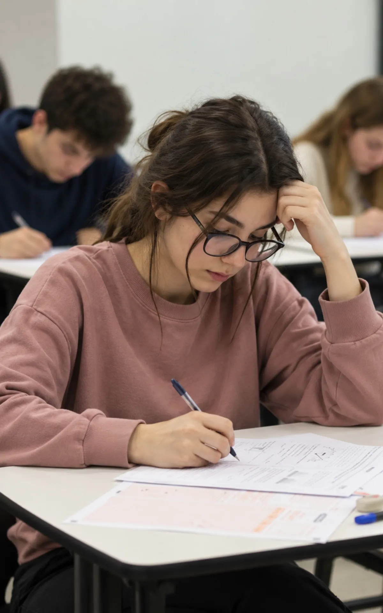
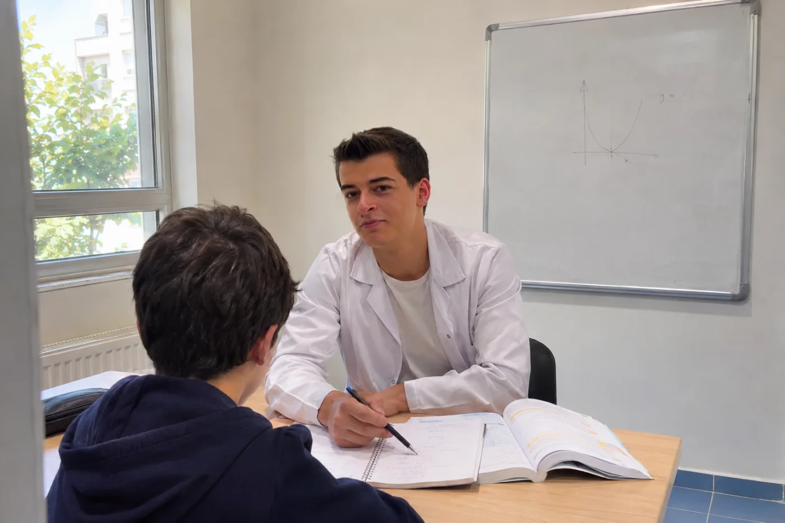

Hedefine uygun programı bul.
Sınıf düzeyine ve ihtiyaca göre filtreleyin; her programın ayrıntı sayfasında düzen, yöntem ve sık sorulanlar var.

Akademik Yaşam Kulübü
Okul sonrası ödev, etüt ve çalışma disiplini; haftada 3 ya da 5 gün.
Programı incele →
Atomica Matematik Atölyesi
Materyalle keşfederek, birlikte düşünerek öğrenilen matematik; 6 ya da 9 kişilik gruplar.
Programı incele →
İngilizce Dil Kulübü
Konuşarak, dinleyerek ve etkinlikle öğrenilen İngilizce; hafta sonu 50 + 50 dakika, 9 kişilik gruplar.
Programı incele →
Akıl ve Zekâ Oyunları
Dikkat, strateji, mantık ve problem çözme; hafta sonu 3 saatlik seanslar.
Programı incele →5–6–7. Sınıf Grup Dersleri
Haftada 10 ders: Matematik, Türkçe, Fen ve İngilizce; iki haftada bir deneme.
Programı incele →8. Sınıf LGS Hazırlık
Haftada 16 ders, iki haftada bir deneme, Hata Karnesi ve koçlukla sistemli LGS hazırlığı.
Programı incele →Lise Ara Sınıf (9–10–11)
Okul derslerinde akademik destek ve TYT temeli; eksikler YKS yılından önce kapanır.
Programı incele →
YKS Hazırlık (12. sınıf ve mezun)
TYT ve YKS’de hedef, netler ve konu eksikleri; deneme, koçluk ve VIP Kütüphane ile birlikte yönetilir.
Programı incele →Bireysel Öğrenci Koçluğu
Hedef, çalışma planı, motivasyon ve düzenli akademik takip; öğrenciye özel.
Programı incele →
Birebir Özel Ders
Öğrencinin ihtiyacına göre planlanan 90 dakikalık birebir seanslar.
Programı incele →Deneme Kulübü
Ara sınıflar ile LGS/YKS için düzenli deneme; sonuç, yanlış ve kazanım analizi.
Programı incele →VIP Kütüphane
09.00–22.00 açık, kontrollü ve takipli çalışma alanı.
Programı incele →Atölye Katı (4–8. sınıf)
Okul sonrası etüt, Atomica, İngilizce ve zekâ oyunları aynı katta.
Programı incele →Bu filtrelere uyan program yok; filtreleri temizleyip tekrar deneyin.
Hangi program uygun, emin değil misiniz?
Öğrencinin sınıfını ve ihtiyacını iletin; kayıt ekibimiz sizi arayıp birlikte belirleyelim.